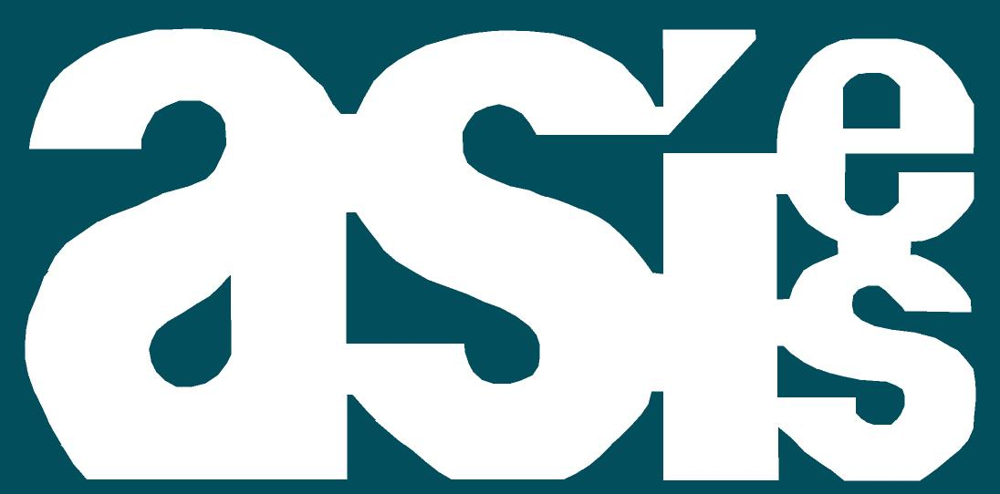

La Asociación para el desarrollo integral Guatemalteco (ADIG) es una asociación civil sin fines de lucro integrada por Guatemaltecos comprometidos por tener una Guatemala mejor, con el único objetivo de buscar el desarrollo integral de los Guatemaltecos.
VISIÓN
Ser una instancia reconocida nacional e internacionalmente por su labor encaminada al fortalecimiento de las capacidades y habilidades de los guatemaltecos, apoyando el desarrollo social, económico, educativo y cultural de las personas y los hogares a través de alternativas reales que generen resultados satisfactorios en beneficio de nuestro país.
El Centro Guatemalteco de Producción más Limpia -CGP+L- es una institución técnica sin fines de lucro que fue establecida el 15 de julio de 1999. Ha contado con el apoyo de instituciones nacionales como Cámara de Industria de Guatemala así como instituciones internacionales como la Organización de las Naciones Unidas para el Desarrollo Industrial (ONUDI); actualmente forma parte de la Red Latinoamericana de Producción más Limpia.

Nuestra visión Foro nacional de reflexión, discusión y propuesta de los fenómenos socio-políticos, económicos, ambientales y culturales a través de actividades públicas y de incidencia ciudadana. Nuestra misión: Investigación, Análisis e Incidencia Entidad pluralista que guarda absoluto respeto a las distintas concepciones y actividades políticas, sociales, económicas y profesionales de sus asociados. No está vinculada con ninguna tendencia política. Los miembros de la Asociación, como personas, poseen diversos criterios y posiciones ideológicas y en su conjunto, les une el propósito de establecer un ordenamiento democrático basado en la justicia, la libertad, la paz y la solidaridad